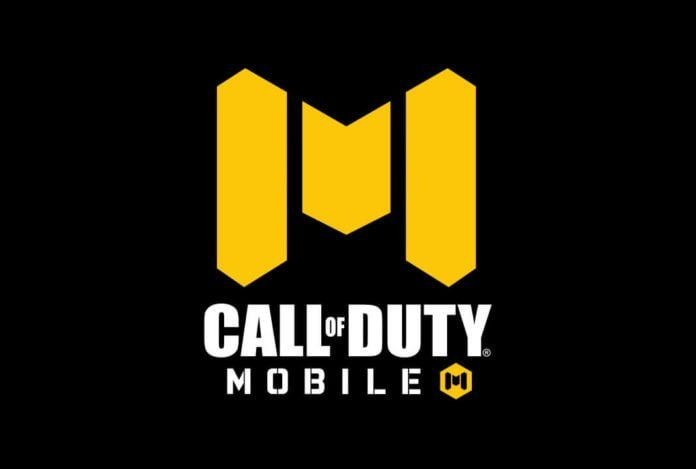
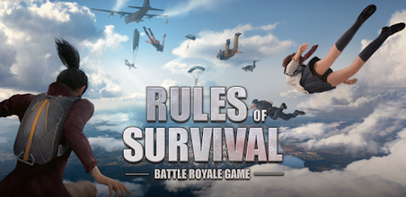

Tales of Series
The Tales of series (Abyss, Graces F, Vesperia, Zestiria, Berseria, and Arise) are created by Bandai Namco, this gaming industry is also known for their anime-based games such as Naruto and Dragonball. My brother likes this genre of games very much and as I tend to watch him I also took interest on it. This series of games is usually about a story of a person where he/she starts from the bottom and wants something due to a certain reason and they have to get stronger to attain it.
Persona Series
The Persona Series (3,4,5 & Strikers) are games created by Atlus. It is a turn-based game and has a great plot, as much as possible the story of it is a bit dark which makes it interesting. My brother is the one who introduced this game to me and I can't wait for another persona game to be released. They also have an anime version, but I prefer the game as it is much well funded by developers and animators rather than the anime.

Valkyria Chronicles
Valkyria Chronicles (1,2, and 4) are games created by Sega which is also popular due to their Sonic games. Its story is about war and is a turn-based game which has a great fantasy plot where I really get into it when I play. It challenges my critical thinking as this is also a strategy game since it is about war. The animation is up to my liking and its gameplay has a unique feeling into it as I love thinking how to outwit the enemy with limited resources.

Kingdom Hearts
Kingdom Hearts (1,2, Birth by Sleep, Dream Drop Distance, and 3) are games created with the collaboration of Disney and Square Enix famous for their Final Fantasy Games. This game made me more knowledgeable about disney characters as they are playable in game and it re-tells the story using the main characters accompanying them in their world.
Mobile Gaming Background
My family (cousins) and friends are very interested in multiplayer games especially mobile online games as it is very handy to bring and play. I tend to play a lot as it is very fun playign it when there are others accompanying me. I also feel great when I play as I tend to trust them more rather than peopke whom I do not know or heard of.


Axie Infinity
Axie Infinity is an NFT game which allows players to earn tokens and sell them with real money. Its card game or turn-based game similar to Pokemon but is also quite unique in its own way. Me and my friends discuss about it as we play it in hopes of gaining more tokens to earn more money.

Call of Duty Mobile
Call of duty mobile is a first-person shooting game which allows a player to experience being a soldier and play within a certain place. This game requires communication and teamwork which made me and the people I play with (Cousins, Friends) more familiar with each other. It also served as our bonding, even though we are not physically present we can communicate and hear each other (mic or voice) as our characters serves as our digital self.

Mobile Legends Bang Bang
Mobile Legends Bang Bang is a multiplayer battle arena (MOBA) where players are to choose a hero they will use to fight against other heroes. This is a 5 vs 5 game which requires teamwork as each person have a role to do to win against the enemy team. This game made me, and my co-players know each other better as we face win and losses each game and makes our bond stronger as we spend time to know each other more through playing this game. I met many people due to this game such as my brother's workmates, schoolmates, and online groups/players. It improved my social skills and ability interacting with others even though we are not on the same age and place.

Rules of Survival
Rules of Survival is the first battle royale game which I played. Even though Player Unknown Battle Grounds (PUBG) is the first one to be released in this genre of game, I do not want to spend money in order to play it. Also we (me and my co-players) likes a less realistic graphics and wants an animated one. This game made me play it for several hours along with my friends and cousins as after school we end up playing it until we sleep or eat. But worry not! We haven't flunked our grades in all subjects despite living this kind of lifestyle. 😂 😂 😂

Genshin Impact